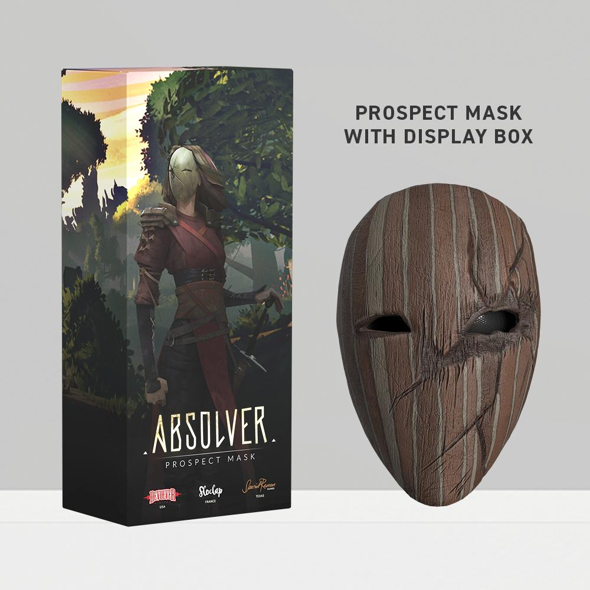

На сайте Special Reserve Games, теперь можно указать Российский Адресс!
Так-что если вы хотели купить Маску, то теперь можно не переплачивать сервисам и не боятся что посылку украдут. Однако тираж масок закончился и теперь придётся ждать пополнения.
